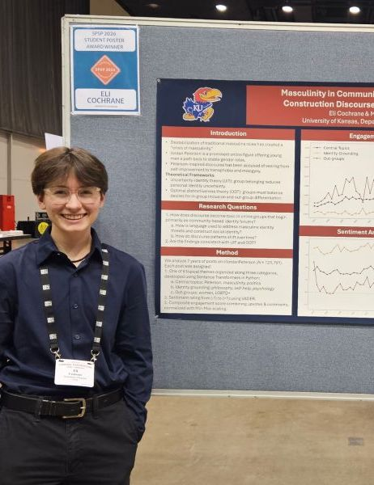
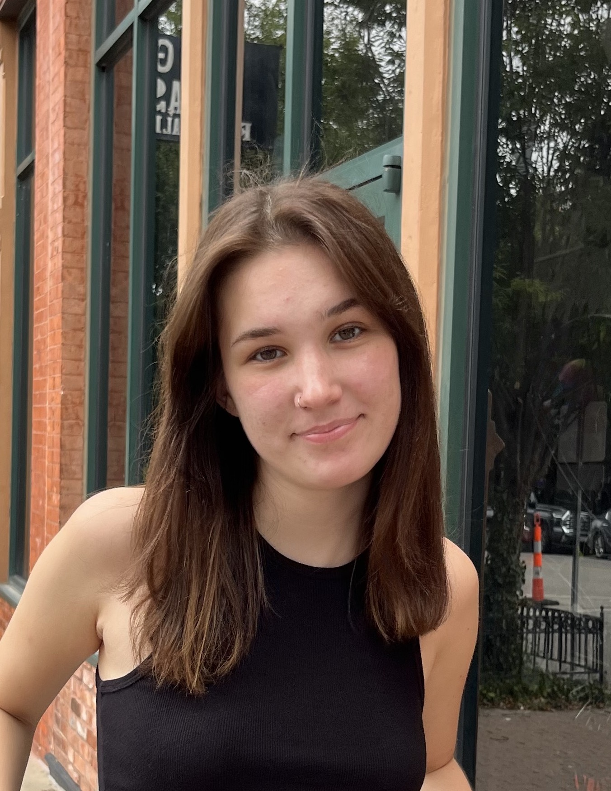

Team

Eli is studying Psychology, Data Science, and Political Science at KU. His research focuses on using computational and experimental methods to understand political psychology, especially within alt-right and conspiracy communities. Within the KRC, he's interested in supporting members through publications and conference presentation feedback, as well as assisting new students interested in research!

Emily is studying Applied Computing with a Concentration in Biology at KU. She investigates the pediatric functional connectome and epileptic lesion localization using imaging modalities like fMRI and DTI. Within the KRC, she's hoping to celebrate the accomplishments of undergraduate researchers and serve as a mentor for those that are interested in exploring the MD/PhD path.
Hannah Cleveland
Hannah is studying Applied Computing with a Concentration in Chemistry at KU. She explores the impact of single amino acid substitutions on protein stability. Within the KRC, she hopes to build a supportive community of like-minded undergraduate students who are passionate about research and eager to learn from one another, while also ensuring that students from all backgrounds feel welcome in research settings.